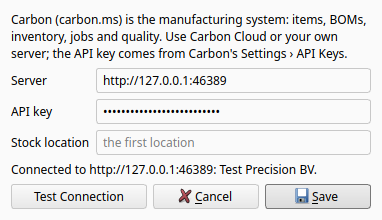
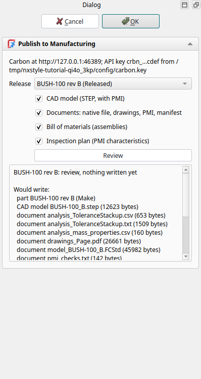
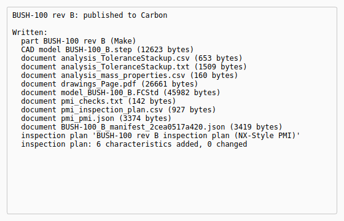
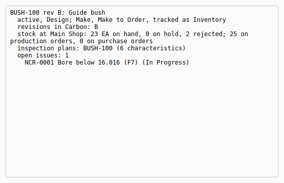

Tutorial BC: Release to manufacturing: the guide bush into Carbon
| Source |
The hand-over from engineering to manufacturing: a released revision becomes the item manufacturing builds, with its model, drawings and inspection plan; the shop’s results come back to engineering |
| You learn |
PLM › Manufacturing Connection, Publish to Manufacturing with Review, Manufacturing Status |
| Needs |
Tutorial V first, which needs Tutorial T (the replay runs both), and a Carbon to connect to (setting it up) |
| Background |
Tutorial V released the guide bush twice: BUSH-100 rev A, then rev B after the engineering change that opened the bore from H7 to F7, with rev A made obsolete. Manufacturing now builds rev B. Its manufacturing system is Carbon: items and revisions, bills of materials, stock, jobs, inspection and non-conformances.
Step by step
1. Connect to Carbon
PLM › Manufacturing Connection.
Type the server (for Carbon Cloud app.carbon.ms) and the API key from Carbon’s Settings › API Keys, then Test Connection: it names the company the key belongs to.
Save.
The server goes into nxstyle.json; the key goes into a file of its own, carbon.key, readable only by you.

2. Review what Carbon would get
PLM › Publish to Manufacturing. The dialog lists the part’s releases and picks the newest Released one: BUSH-100 rev B. Rev A is obsolete and is not offered as the default.
Review makes rev B’s release package (the part as released, not the working copy, checked against its manifest) and lists what Carbon would get, without writing anything:
-
the part BUSH-100 at revision B;
-
the STEP AP242 with its PMI as the item’s CAD model;
-
the native file, the drawing as PDF, the PMI tables, the stack-up, the mass properties and the manifest as the item’s documents;
-
an inspection plan with one characteristic for each row of the PMI inspection plan.

3. Publish
OK (or MB2). The Information window lists what was written.
In Carbon the bush is now item BUSH-100 Guide bush (the name of its first release; rev B’s description, ECO-001: bore F7, becomes the item’s description) at revision B, its 3D model is the release’s STEP, and its inspection plan holds the characteristics with their limits: the bore Ø16 F7 is nominal 16 with +0.034 and −(−0.016), that is 16.016 to 16.034 mm, as in tutorial V’s package.

4. Publish again
Publish to Manufacturing, OK, a second time: nothing is written. Carbon has the part, its model, its documents and its characteristics, and the release’s manifest, named after rev B’s Strata commit, says this release is there already: the package is made again (its files carry new time stamps), but none of it is sent twice.
5. What manufacturing reports back
The shop builds 25 bushes on a job: 23 are good, 2 are rejected for a bore below 16.016 mm, and quality opens a non-conformance. That happens in Carbon, on its shop-floor and quality side.
PLM › Manufacturing Status reads it back for the open part: the revision Carbon builds, the stock (23 on hand, 2 rejected), the inspection plan and the open non-conformance.

The replay
The replay’s Carbon is the stand-in server of the unit tests (tests/carbon_fake.py): it runs on the same computer, answers over HTTP, and refuses any request that Carbon’s published API schemas refuse.
The dialogs, the requests and the checks are the same as with a real Carbon; the shop’s stock and non-conformance (step 5) are written into the stand-in by script.
| # | In the book (NX) | In FreeCAD NX-Style | Result | Notes |
|---|---|---|---|---|
BC1 |
The guide bush, released in tutorial V as BUSH-100 rev B (rev A obsolete); a Carbon to send it to |
the replay’s Carbon: the stand-in server of the unit tests, on this computer |
differs |
releases [('BUSH-100', 'A', 'Obsolete'), ('BUSH-100', 'B', 'Released')]; server 127.0.0.1:62613. A user connects to Carbon Cloud (app.carbon.ms) or their own Carbon instead |
BC2 |
Manufacturing Connection: server and API key, Test Connection, Save |
ribbon 'PLM › Manufacturing > Manufacturing Connection', server and key typed, 'Test Connection', 'Save' |
same |
'Connected to 127.0.0.1:62613: Test Precision BV.'; the server goes into nxstyle.json, the key into carbon.key (mode 0o666), never into nxstyle.json |
BC3 |
Publish to Manufacturing: the newest Released revision, Review |
ribbon 'PLM › Manufacturing > Publish to Manufacturing', release 'BUSH-100 rev B (Released)', 'Review' |
same |
nothing written yet (0 writes); the review lists part BUSH-100 rev B (Make); CAD model BUSH-100_B.step (12623 bytes); document analysis_ToleranceStackup.csv (653 bytes); document analysis_ToleranceStackup.txt (1509 bytes); document analysis_mass_properties.csv (160 bytes); document drawings_Page.pdf (44544 bytes); document model_BUSH-100_B.FCStd (45165 bytes); document pmi_checks.txt (142 bytes); document pmi_inspection_plan.csv (927 bytes); document pmi_pmi.json (3374 bytes); document BUSH-100_B_manifest_373fdca35af0.json (3419 bytes); inspection plan 'BUSH-100 rev B inspection plan (NX-Style PMI)'; inspection plan: 6 characteristics added, |
BC4 |
OK: Carbon gets the release |
MB2 = OK |
same |
13 writes: part BUSH-100 rev B (Make); CAD model BUSH-100_B.step (12623 bytes); document analysis_ToleranceStackup.csv (653 bytes); document analysis_ToleranceStackup.txt (1509 bytes); document analysis_mass_properties.csv (160 bytes); document drawings_Page.pdf (44544 bytes); document model_BUSH-100_B.FCStd (45165 bytes); document pmi_checks.txt (142 bytes); document pmi_inspection_plan.csv (927 bytes); document pmi_pmi.json (3374 bytes); document BUSH-100_B_manifest_373fdca35af0.json (3419 bytes); inspection plan 'BUSH-100 rev B inspection plan (NX-Style PMI)'; inspection plan: 6 characteristics added, 0 changed |
BC5 |
In Carbon: the part at rev B, its CAD model, documents and inspection plan |
what the replay’s Carbon holds |
same |
item BUSH-100 rev B (active); CAD model BUSH-100_B.step; documents ['BUSH-100_B_manifest_373fdca35af0.json', 'analysis_ToleranceStackup.csv', 'analysis_ToleranceStackup.txt', 'analysis_mass_properties.csv', 'drawings_Page.pdf', 'model_BUSH-100_B.FCStd', 'pmi_checks.txt', 'pmi_inspection_plan.csv', 'pmi_pmi.json']; 6 characteristics for 6 plan rows; the bore Ø16 F7 as nominal 16 +0.034 -(-0.016) mm, i.e. 16.016 to 16.034; requests outside Carbon’s published schemas: 0 |
BC6 |
Publish the same release again |
ribbon 'PLM › Manufacturing > Publish to Manufacturing', MB2 = OK |
same |
0 writes []: Carbon already has the part, its model, its 9 documents and its characteristics, so nothing is sent twice |
BC7 |
The shop builds it: 25 on a job, 23 good, 2 rejected for an undersize bore (a non-conformance) |
written into the replay’s Carbon by script, as the shop floor and quality would in Carbon |
differs |
in a real Carbon this comes from jobs, receipts and inspections on the MES and QMS side |
BC8 |
Manufacturing Status: revision, stock and the open non-conformance |
ribbon 'PLM › Manufacturing > Manufacturing Status' |
same |
BUSH-100 rev B: Guide bush | active, Design; Make, Make to Order, tracked as Inventory | revisions in Carbon: B | stock at Main Shop: 23 EA on hand, 0 on hold, 2 rejected; 25 on production orders, 0 on purchase orders | inspection plans: BUSH-100 (6 characteristics) | open issues: 1 | NCR-0001 Bore below 16.016 (F7) (In Progress) |
BC9 |
Every request the replay sent matches Carbon’s published API |
checked by the replay’s Carbon |
same |
33 requests; refused by the schemas: none |
| Result | Means |
|---|---|
same |
The book’s NX steps work as written. |
differs |
It works, but the FreeCAD way is different; the notes say how. |
limit |
The book’s way fails in FreeCAD itself; a workaround follows in the next steps. |
missing |
FreeCAD has no such function; a stand-in follows. |
skipped |
Not replayed; the notes give the reason. |
FAILED |
Did not work. |
What differs from NX
-
NX hands a part to manufacturing through Teamcenter and Siemens' own manufacturing systems; here it goes from Strata’s release to Carbon, an open-source ERP, MES and QMS, over Carbon’s API.
-
Publish to Manufacturing sends the release package, so Carbon gets the same verified files a supplier gets.
-
A later revision is created in Carbon inactive, and a released make method is never edited: manufacturing decides when a new revision goes live (what it never does).
-
The replay’s Carbon is a stand-in: see what is tested.